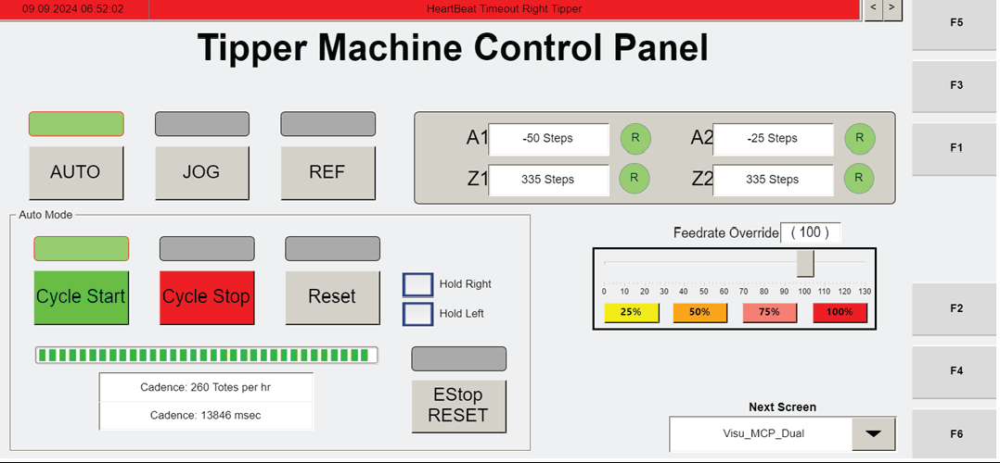

| Procedure ID | proc_recover_non_recoverable_operator_station_motor_fault_mcp_dual_f3_v1 |
|---|---|
| Title | Recover Non-Recoverable Operator Station Motor Fault Using MCP_Dual (F3) Manual Jog, Reset, and Cycle Start |
| Procedure Type | recovery |
| Primary Role | operator |
| Support Safe | Yes |
| Capability Tags | tipper_station_fault |
| Access Surface | tipper_hmi |
| Audience Roles | operator |
| Failure Pattern Tags | None |
| Validation Status | needs_sme_review |
| Merge Status | source_finalized |
When a non-recoverable operator station motor fault (e.g., motor overload) cannot be recovered in software, use the operator station HMI MCP_Dual screen (F3) to stop the cycle, enter manual jog mode, clear any axis faults with RESET, jog the correct axes to reposition the tote on/near the robot, then return to automatic mode and press CYCLE START to release the grippers and command the robot to the hospital station. After the robot leaves the tipper, press RESET.
Use this procedure when the operator station has a non-recoverable motor fault (example given: motor overload) and the station needs to be manually reset so the tote can be repositioned and the robot can be commanded to the hospital station.


Responsible role: operator
Instruction:
On the operator station HMI, navigate to the "MCP_Dual" screen (F3).
Expected result:
The MCP_Dual (F3) screen is displayed with the Manual Mode/Fault area and the visible controls used for recovery (including RESET and cycle controls).
Responsible role: operator
Instruction:
Press CYCLE STOP to stop the tipping cycle.
Expected result:
The tipping cycle is stopped (cycle is halted) on the MCP_Dual (F3) screen.
Responsible role: operator
Instruction:
Press JOG to enter manual jog mode.
Expected result:
Manual jog mode is active (Manual Mode indicator/status is shown) on MCP_Dual (F3).
Responsible role: operator
Instruction:
If any of the axes show a fault, press RESET to clear the fault.
Expected result:
Axis fault indicators clear after pressing RESET (no longer indicated on the affected axis/axes).
Stop or Escalate If:
Responsible role: operator
Instruction:
If the tote is lifted off the robot, jog either the Z-axis or A-axis, or both, to position the tote on or nearly on the robot. Use A1 and Z1 for the left axis; use A2 and Z2 for the right tipper.
Expected result:
The tote is positioned on or nearly on the robot by jogging the correct axis controls (left: A1/Z1, right: A2/Z2).
Responsible role: operator
Instruction:
Press AUTO to enter automatic mode.
Expected result:
Automatic mode is active (Manual Mode indicator clears/changes) on MCP_Dual (F3).
Responsible role: operator
Instruction:
Press CYCLE START. The grippers will release and the robot will be commanded to go to the hospital station.
Expected result:
Grippers release and the robot is commanded to go to the hospital station.
Stop or Escalate If:
Responsible role: operator
Instruction:
After the robot has left the tipper, press RESET.
Expected result:
RESET is pressed after robot departure from the tipper, completing the recovery sequence.